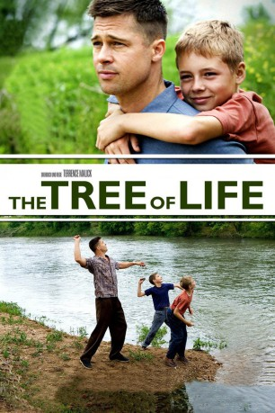
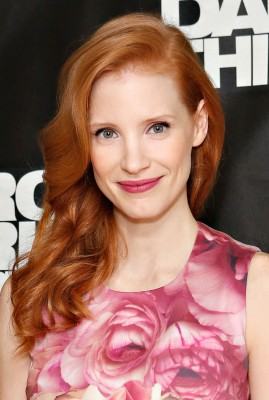
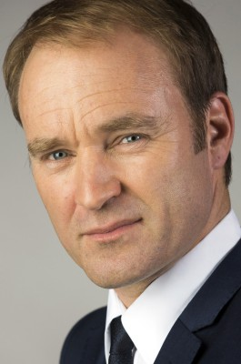

#2415 The Tree of Life
Auszeichnungen: für 3 Oscars nominiert
 
 IMDB-Wertung: 6.8 / 10
IMDB-Wertung: 6.8 / 10  Metascore: 85
Metascore: 85 
Das weltumspannende, das die Welt zusammenhaltende Wesen vom Lebensbaum ist die Ausgangsidee von The Tree of Life, die hier auf eine scheinbar ganz normale Familie im mittleren Westen der USA in den 1960ern übertragen wird. Wir sehen die Welt durch die Augen des jungen Jack: neugierige, weltoffene, staunende Augen. Wie auch seine Mutter vermag er mit seiner Seele die Welt zu schauen. Sein Vater jedoch, ein Pragmatiker, trichtert dem Kind „die Realitäten“ der Welt ein, einer Welt, in der jeder sich selbst der Nächste ist. Hin- und hergerissen zwischen diesen verschiedenen Ansichten muss Jack im Zuge seiner Kindheit erfahren, dass das Leben auch düstere Seiten und viel Leid bereithält. Als Erwachsener ist ihm die Welt nur noch Rätsel und er eine darin verlorene Seele. Was ist der große Plan, was bedeutet The Tree of Life, und was ist Jacks Stellung im Universum? Das „Schicksal“ hält eine wundersame Antwort für ihn parat…
Jahr: 2011
Dauer: 139 Minuten
FSK: 12
Land: USA Studio: Fox Searchlight PicturesTonspuren: DTS - ,
Untertitel:
Auflösung: 1080p (1920x1040) Größe: 12902 MB
Genre: Drama, Fantasy
Regisseur: Terrence Malick
Drehbuch: Terrence Malick
Soundtrack: Alexandre Desplat
Darsteller:
- Brad Pitt als Mr. O'Brien
 Sean Penn als Jack
Sean Penn als Jack-  Jessica Chastain als Mrs. O'Brien
- Tye Sheridan als Steve
- Fiona Shaw als Grandmother
- Nicolas Gonda als Mr. Reynolds
-  Will Wallace als Architect
- Brayden Whisenhunt als Jo Bates
- Joanna Going als Jack's Wife
- Irene Bedard als Messenger
- Savannah Welch als Mrs. Kimball
- Tamara Jolaine als Mrs. Stone
- Kimberly Whalen als Mrs. Brown
- Michael Dixon als Dusty Walsh
- Nicholas Yedinak als Nicholas Swimmer
- Benjamin Dane als Symphony Patron , uncredited
- Jackson Hurst als Uncle Ray , uncredited
- Zach Irsik als Jack's Son , uncredited
- Scott Jefferies als Businessman , uncredited
- Crystal Mantecon als Elisa , uncredited
- Jodie Moore als Mr. Walsh , uncredited
- Kathryn Rawson als Capitol Secretary , uncredited
- Danielle Rene als Third Women , uncredited
- Hunter McCracken als Young Jack
- Laramie Eppler als R.L.
- Jessica Fuselier als Guide
- Kelly Koonce als Father Haynes
- Bryce Boudoin als Robert
- Jimmy Donaldson als Jimmy
- Kameron Vaughn als Cayler
- Cole Cockburn als Harry Bates
- Dustin Allen als George Walsh
- Finnegan Williams als Jack @ 2
- Michael Koeth als Jack @ 5
- John Howell als R. L. @ 2
- Samantha Martinez als Samantha
- Julia M. Smith als Beth
- Anne Nabors als Rue
- Christopher Ryan als Prisoner
- Tyler Thomas als Tyler Stone
- Michael Showers als Mr. Brown
- Margaret Hoard als Jane
- Wally Welch als Clergyman
- Hudson Lee Long als Mr. Bagley
- William Hardy als Jack's Work Colleague
- Tommy Hollis als Tommy
- Cooper Franklin Sutherland als Robert #2
- John Cyrier als Bi-Plane Pilot
- Erma Lee Alexander als Erma
- Charlotte Biggs als 1950's Woman , uncredited
Datei: X:\2011(N-Z)\Tree of Life, The (2011, FSK12, 1920x1040).mkv seit 06.11.2015
Festplatte: HD 2011(G-Z)
 Es gibt insgesamt 132 Filme in der Gruppe '2011(N-Z)'
Es gibt insgesamt 132 Filme in der Gruppe '2011(N-Z)'